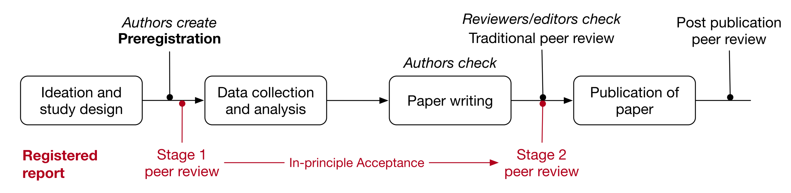

8 可重製研究實作指南
本單元依預先註冊(Lindsay et al., 2016)與註冊報告(Atten Percept Psychophys, 2013)的指南，介紹如何準備研究計畫，以及撰寫研究報告。之前單元提供的再現研究習作，可參考這個單元規劃與執行研究，並完成最後的研究報告。
8.1 研究倫理基本須知
科學研究能增進人類對這個世界的了解，是每個領域科學家進行研究的主要動機。行為與社會科學的研究對象是人類，運用各種方式取得人類行為資料是研究之必需。儘管研究有崇高的目標，任何取得資料的方式都不能侵害個人利益，或造成任何可能的風險。以下引述 Saul (2011) 整理的基本須知，補充最近應該考慮的例子：
- 獲取資料的方式是否會引發參與者心理或生理的不適？ 例如：詢問個人性別不只設計兩個選項，讓跨性別人士自由決定要不要告知。
- 收集資料有無侵犯個人隱私？ 例如在公開場合進行實驗；收集個人手機定位…
- 因實驗操作的需要，事前隱暪部分內容，會不會損害參與者權益？例如：分班實施不同的教學法，比較學生的學習表現。
- 參與者隨時中止參與研究的自由。
- 邀請未成年人士參與研究，應考慮的問題：
- 以非人類動物進行研究，應考慮的問題：
8.2 預先註冊範例
因為不同心理科學領域常用的方法不同，理論思考與設定問題的取向也有差異，無法設定一體適用的計畫指南。開放科學中心已經貼心地為各領域心理科學研究者，整理合適的預先註冊範例1，學生可根據主題所屬 領域，參考合適的範例規劃預先註冊。
預先註冊與專業期刊經營的註冊報告，兩者流程一致，只是註冊報告有期刊邀請的評審把關(圖@ref(fig:ch07-fig01))。若教師有足夠的資源組成教學團隊，以註冊報告模式審核學生預先註冊計畫，非常有機會給予學生深刻的情境印象。
8.3 報告寫作建議
完成資料分析的寫作報告，實際的樣式要遵守呈現報告的用途指南，如期刊的投稿格式、教師指定的報告樣式。心理學的各種報告樣式，基本遵守美國心理學會頒佈的出版手冊(American Psychological Association, 2010)，編輯者可依實際需要調整部分寫作細節。寫作者養成依出版手冊撰寫論文報告的習慣，足以應付任何報告寫作要求。
8.3.1 報告格式與元素
此處引用 Saul (2011) 的建議，搭配預先註冊的觀念，說明一份完整報告的各部分寫作建議。
標題頁
建議：口語化問句，描述獨變項操作如何導致依變項的測量結果。
摘要
建議：以百餘字簡介整份研究報告的要點。
- 開頭句說明研究目標與規劃研究的想法。
- 簡述研究狀況與參與者條件。
- 簡述研究方法：獨變項的設定，依變項的測量方式。
- 簡述主要發現：除了重要統計指標，也可用一句話說明。
- 字數未達上限，可說明研究結果的重要貢獻。
緒論
- 三建議：開場以簡明易懂的案例或通俗知識說明標題涵義；呈現與這次研究最有關係的兩到三項過去發現；建立這次研究假設到方法的邏輯關聯。
- 三不可：一網打盡所有過去發現；仔細描述所有相關研究的細節；用雜文筆調寫作。
- 目標：以過去文獻說明獨變項設定與使用測量方法的理由，預測可能發現的結果。
- 假設：使用精確用詞描述獨變項與依變項，說明預測成立的原理。
方法
- 說明如何進行實驗的重要細節，讓其他研究者足以根據描述完整再現這次研究為原則。
- 可適當引用放置公開材料的資料庫網址，提供讀者自行取用。
設計
- 明列獨變項的隨機分派方法、依變項的測量與分數轉換、不做分派的控制變項處置方式、非主要依變項的其他變項如何測量。
- 交互平衡是最常見的隨機分派方法。
- 說明估計考驗力的方法。有相同設計的過去研究，可做為估計考驗力的資訊。
參與者
- 說明參與者加入研究的管道．平均背景資訊與權益保障措施。
- 說明參與者人數，年齡範圍等，最好有考驗力分析做輔助資訊。
材料
- 介紹使用的字詞、問卷、電腦設備等。不需交待詳細內容與規格，而是展現獨變項操作的差異化條件。
- 文字或圖像材料可放置於可取用的網路資料庫，提供讀者可獲得材料的連結。
程序
- 說明執行研究的正確過程，足以讓其他研究者重新再現。研究過程使用的指示語、說明、紀錄表等次級文件、可發佈於可取用的網路資料庫。
結果
- 通常先呈現描述統計，再呈現推論統計。這個部分不應詮釋統計結果。
- 研究者要正確且清晰地報告結果，APA寫作規範有數值與統計符號的建議表達。
- 採用動態文本(dynamic documents)寫作，讀者能使用公開資料查核報告中的數據與圖表。
- 如果一句話要呈現的數值超過三個種類，而且總共有十個以上的數字，最好使用表格呈現。
討論
- 使用一般的書面語概述實驗結果，以及指出是否符合假設的預測。
- 比較與之前研究的同異處。
- 這項研究結果能擴展的知識界限。
- 未來可改進的地方。
- 如果研究結果有可應用性，可表達之。如果有註冊計畫書，應限制在計畫設定的範圍之內。
- 以三句或四句結尾，通常是摘要的後半部。
參考文獻
- 依指定樣示排列。
- 運用能管理與編輯樣式的書目管理軟體，編輯事半功倍。
American Psychological Association (Ed.). (2010). Publication manual of the American Psychological Association (6th ed). American Psychological Association.
Atten Percept Psychophys. (2013). Registered Reports and Replications in Attention, Perception, & Psychophysics. Attention, Perception, & Psychophysics, 75(5), 781–783. https://doi.org/10.3758/s13414-013-0502-5
Lindsay, S., Simons, D., & Lilienfeld, S. (2016). Research Preregistration 101. Observer, 29(10), 14–16.
Saul, M. (2011). How to Write a Lab Report | Simply Psychology. https://www.simplypsychology.org/research-report.html.
Example preregistrations by discipline and study type~ https://osf.io/e6auq/wiki/Example%20Preregistrations/↩︎